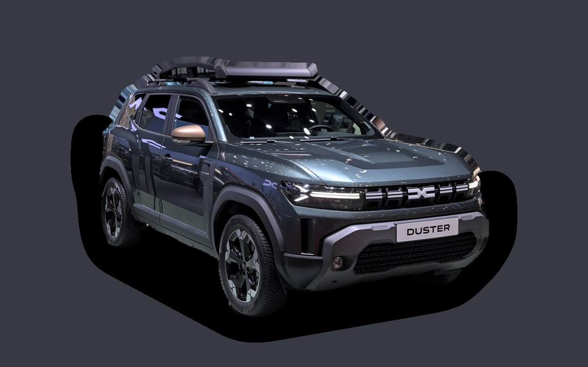

Vad kostar en Dacia Duster per månad?
En Dacia Duster från 2026 kostar cirka 4 129 kr i månaden, allt inräknat.


Månadskostnad per årsmodell
| Årsmodell | Version i beräkningen | Pris | Per månad | Betyg |
|---|---|---|---|---|
| 2026 | TCe 130, Expression | 281 800 kr | 4 129 kr | E |
Räknat på 5 års ägande och 1 250 mil per år, med bränslepriser från 2026-10-22. Månadskostnaden innehåller värdeminskning, drivmedel, service och reparationer, försäkring och fordonsskatt.
Så fördelas kostnaden för en 2026:a
- Värdeminskning: 1 746 kr/mån
- Drivmedel: 1 228 kr/mån
- Service och reparationer: 319 kr/mån
- Försäkring: 476 kr/mån
- Fordonsskatt: 361 kr/mån
Leasa eller köpa ny?
Dacia Privatleasing erbjuder Duster Expression hybrid från 3 390 kr i månaden i 36 månader och 1 000 mil per år. Så mycket kostar det jämfört med att köpa samma bil ny för 313 600 kr och sälja den efter 36 månader, räknat på 1 250 mil per år och 5 procents ränta.
Ungefär lika Skillnaden är under 100 kr i månaden.
| Per månad | Leasa | Köpa |
|---|---|---|
| Leasingavgift, 1 250 mil per år | 3 492 kr | – |
| Uppläggnings- och aviavgift | 87 kr | – |
| Värdeminskning | – | 2 200 kr |
| Ränta på pengarna, 5 % | – | 1 142 kr |
| Service och reparationer | ingår | 275 kr |
| Drivmedel | 1 078 kr | 1 078 kr |
| Försäkring | 548 kr | 548 kr |
| Fordonsskatt | 396 kr | 396 kr |
| Totalt per månad | 5 600 kr | 5 638 kr |
| Totalt på 36 månader | 201 600 kr | 202 968 kr |
Du kör 250 mil mer per år än erbjudandet räknar med. Uppskattat pris för fler mil: 102 kr i månaden. Dacia Privatleasing: Duster Expression hybrid, 36 månader, 1 000 mil per år, service ingår, rörlig avgift som följer räntan. Uppläggningsavgift 995 kr och aviavgift 59 kr i månaden. Källa: dacia.se, avläst 26 oktober 2026, gäller till och med 4 januari 2027.
Köpa: 313 600 kr för en ny bil i samma version, och 234 395 kr tillbaka när du säljer den efter 3 år. Restvärdet bygger på annonspriserna för 3 år gamla bilar, justerat för att du kör 3 750 mil på 3 år i stället för typiska 3 000 mil. Räntan är vad pengarna kostar: ränta på ett billån, eller räntan du går miste om på sparade pengar. Drivmedel, försäkring och skatt är desamma. Övermil och onormalt slitage betalas när leasingbilen lämnas tillbaka, och byter du in en köpt bil hos en handlare får du oftast mindre än annonspriset.
Räkna med din egen körsträcka och ränta · Alla leasingbilar jämförda
Begagnatpriser i annonser
| Årsmodell | Medianpris | Annonser | Typiskt miltal |
|---|---|---|---|
| 2026 | 299 900 kr | 7 | 500 mil |
| 2025 | 287 400 kr | 10 | 1 500 mil |
| 2024 | 284 900 kr | 9 | 1 300 mil |
Medianpriset i svenska annonser per årsmodell i oktober 2026 (källa: Blocket, AutoUncle). Annonspriser är utgångspriser, och slutpriset kan bli lägre.
Motorer och versioner
| Motor | Drivmedel | Effekt | 0–100 km/h | Förbrukning (WLTP) | Räckvidd | Årsmodeller | Pristillägg |
|---|---|---|---|---|---|---|---|
| TCe 130 | Bensin | 130 hk | 10,2 s | 5,7 l/100 km | – | från 2024 | – |
| Hybrid 140 | Hybrid | 140 hk | 10,1 s | 5 l/100 km | – | från 2024 | +43 700 kr |
| TCe 130 4x4 | Bensin | 130 hk | 10,4 s | 6 l/100 km | – | från 2024 | +61 200 kr |
- Utrustning: Expression, Journey (+17 600 kr)
Fakta
- Kaross
- SUV
- Årsmodeller
- sedan 2024
- Nypris från
- 281 800 kr
- Bagage
- 472 liter
- Euro NCAP
- 3 av 5 stjärnor
- Nybilsgaranti
- 3 år
- Driftsäkerhet
- 2,5 av 5
- Helförsäkring, uppskattning
- 6 200 kr/år
- Service, uppskattning
- 3 200 kr/år
Vanliga fel att ha koll på
- Rost på bromsledningar och underrede, reparation cirka 7 000 kr
Felen gäller vissa motorer och årsmodeller. I kalkylatorn räknas risken för just den version du väljer.
Fördelar och nackdelar
Fördel
Lägst inköpspris bland SUV:arna och billig att laga.
Nackdel
Enkel interiör och bara tre stjärnor i Euro NCAP.
Liknande bilar
 Kia EV34 141 kr/mån som 2026:a
Kia EV34 141 kr/mån som 2026:a Audi Q4 e-tron4 162 kr/mån som 2023:a
Audi Q4 e-tron4 162 kr/mån som 2023:a Cupra Formentor4 052 kr/mån som 2023:a
Cupra Formentor4 052 kr/mån som 2023:a Volvo XC60 I4 049 kr/mån som 2014:a
Volvo XC60 I4 049 kr/mån som 2014:a Toyota RAV44 043 kr/mån som 2023:a
Toyota RAV44 043 kr/mån som 2023:a Audi Q34 223 kr/mån som 2023:a
Audi Q34 223 kr/mån som 2023:a
Uppdaterad 2026-10-27 · annonsdata okt 2026